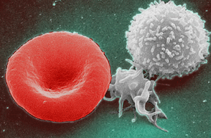
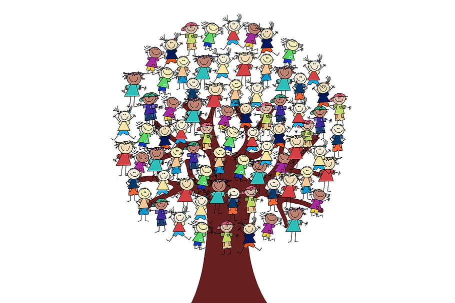
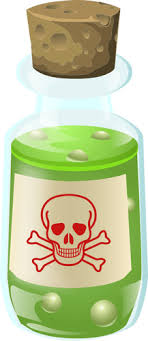

Different cultures have different beliefs about what happens when people dies. However, death is something we all have to face whether it is our own or that of a loved one.
Continue reading

Did you know that you began building the structure and power of your immune system from the moment you were conceived? The immune system is an interactive network that evolves and grows just as you grew in utero. And that growth never stops. That growth is enhanced right now by the same power that fueled your immune system before: the power of love.

Children elicit our greatest skill as healthcare practitioners. There are two guideposts you can rely on for being of service to them:
by Stephanie Mines
The field of Pre and Perinatal Psychology is quite new. As science reveals more about the neurology and physiology of our earliest development during the primal period (conception through the third year of life), and as we enhance our understanding of the nervous system, we are forced to recognize a collective error.
Continue reading
The first step in recovering from trauma is self-acceptance. The second step is self-care. The third step is a lifelong committment to self-accetance and self-care.

Text taken from: www.britannica.com
Toxin, any substance poisonous to an organism. The term is sometimes restricted to poisons spontaneously produced by living organisms (biotoxins). Continue reading
by Stephanie Mines
Text taken from: wikipedia.org
The visual system is the part of the central nervous system which gives organisms the ability to process visual detail as sight, as well as enabling the formation of several non-image photo response functions. It detects and interprets information from visible light to build a representation of the surrounding environment. Continue reading